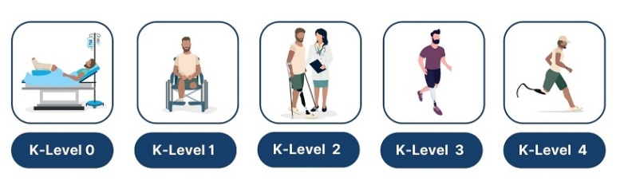
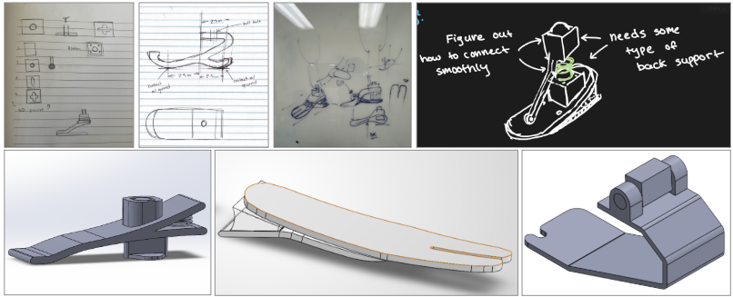
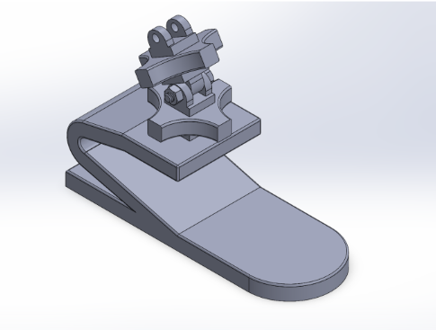
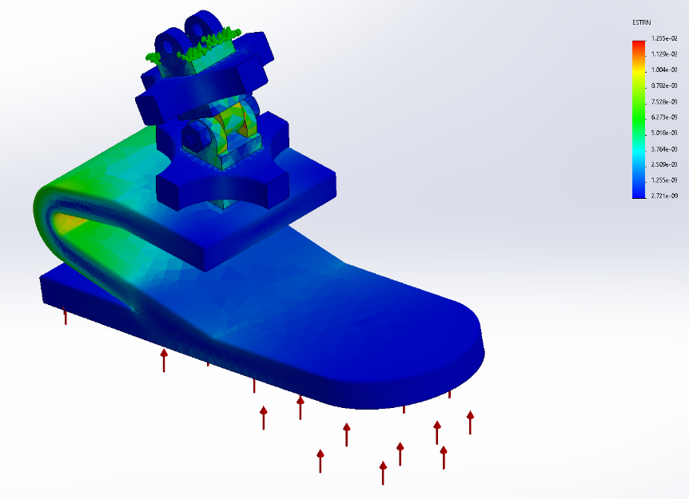
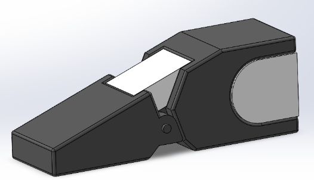
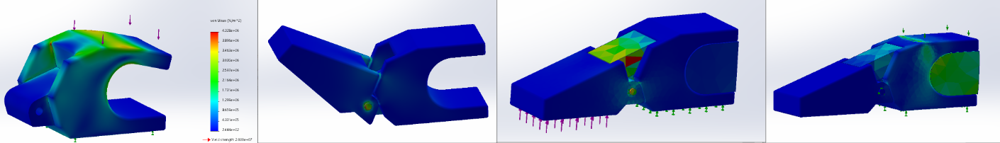
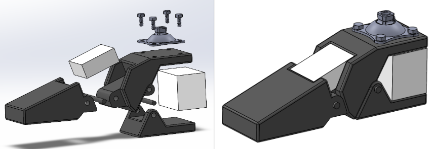
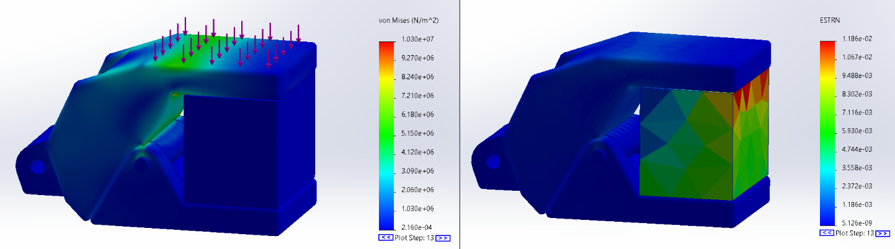

PROSTHETICS • SOLIDWORKS • FINITE ELEMENT ANALYSIS
Modular Prosthetic Ankle-Foot Design
Iterative design and structural analysis of a modular ankle-foot prosthesis for K2 ambulation, with emphasis on gait-phase loading, stress distribution, energy absorption, and low-cost manufacturability.

01 / OVERVIEW
Improving adaptability for low-activity ambulators.
K2-level prosthetic users are generally limited community ambulators who navigate level ground and minor environmental barriers such as curbs, stairs, and uneven terrain.
The objective of this project was to develop a modular ankle-foot prosthesis that could improve structural reliability and adaptability while remaining affordable and practical to manufacture.

K2 prosthetic Levels
02 / BIOMECHANICS
Designing around stance and toe-off loading.
The prosthetic was evaluated during two key phases of the gait cycle: stance, when body weight is supported over the foot, and toe-off, when the forefoot pushes the body forward.
Stance
Structural performance was evaluated under body-weight loading with emphasis on heel stress and load transfer.
Toe-Off
The forefoot was evaluated under push-off loading to assess stress and deformation.
200 lb Load Case
Simulations were performed for a maximum body weight of approximately 200 lb (91 kg).
03 / METHODS
CAD and FEA before physical prototyping.
Multiple design concepts were modeled in SolidWorks and evaluated using static finite element analysis to identify high-stress regions and potential failure points.
Concept Development
Multiple geometric concepts were created based on gait mechanics, comfort, and structural requirements.
SolidWorks CAD
Concepts were modeled in 3D to evaluate geometry, component interaction, and manufacturability.
Material Assignment
PLA-CF and EVA foam properties were used for early-stage computational evaluation.
Static FEA
Stress and strain were evaluated under stance and toe-off loading conditions.
Failure Analysis
Stress concentrations and excessive deformation were used to identify critical design weaknesses.
Iterative Redesign
Simulation results directly informed subsequent geometry changes and material integration.

Prosthetic ankle-foot design iterations developed during the project
04 / DESIGN ONE
Initial concept revealed a critical heel weakness.
The first concept was designed around affordable materials and simple fabrication.
During toe-off, the design remained below the material yield strength, indicating that it could withstand the simulated loading.
During stance, however, peak stresses occurred at the curved heel region and exceeded the material yield strength, identifying a likely structural failure location.

Design One

Design One — finite element analysis
05 / DESIGN TWO
Adding compliance and energy absorption.
The second design separated the prosthetic foot into multiple structural members and introduced an EVA foam insert.
The foam was intended to compress under load, absorb energy, and reduce rigid stress transfer between the structural components.
Without Foam
Elevated stresses remained concentrated along the upper curved heel region.
With EVA Foam
The foam compressed under loading and absorbed part of the applied load, reducing rigid stress transfer.

Design Two

Design Two — finite element analysis
06 / DESIGN THREE
Improved load sharing through an additional heel hinge.
Design Three added another hinge near the heel to improve how body weight was transferred into the foam during stance.
Stress distribution shifted toward lower ranges along the upper structural member.
Stress gradients became more uniform, indicating improved load sharing.
Highest strain occurred within the EVA foam, confirming that it was absorbing load.
The revised geometry reduced the concentrated stress behavior seen in the earlier concepts.
The EVA foam actively compressed during stance, while the surrounding structural components maintained relatively low strain.
Overall, Design Three demonstrated improved heel performance through better load transfer and energy absorption.

Design Three

Design Three — finite element analysis
07 / MATERIALS
Low-cost materials for early-stage validation.
PLA-CF + EVA foam
PLA-CF and EVA foam were selected for initial modeling because of their affordability and accessibility.
This material combination also allowed the concept to remain compatible with additive manufacturing for prototype development.
08 / FUTURE WORK
Moving from simulation to physical validation.
Material Upgrades
Future iterations would evaluate aluminum and fiber-reinforced polymers for improved fatigue and bearing strength.
Foam Comparison
Polyurethane foam could be compared with EVA for comfort, durability, and compression behavior.
Compression Testing
Bench testing would validate structural strength, stiffness, and peak deformation.
Cyclic Loading
Repeated loading would evaluate hinge durability and fatigue performance.
Manufacturing
Metallic parts could be CNC machined, while composite parts could use molding or composite layup processes.
Full Prosthesis Integration
The ankle-foot is intended to integrate with an adjustable pylon and socket for a complete transtibial prosthetic.
09 / ENGINEERING TAKEAWAY
Simulation-guided prosthetic design.
This project used biomechanics, CAD, finite element analysis, and iterative design to identify structural weaknesses before physical fabrication.
The progression from Design One through Design Three demonstrates how computational analysis can directly guide geometry, load transfer, and material decisions in medical-device development.
FULL PROJECT DOCUMENTATION
Prosthetic Ankle-Foot Project Poster
View the complete project poster for additional details on the design process, finite element analysis, materials, and results.
View Full Project Poster ↗10 / TECHNICAL SKILLS